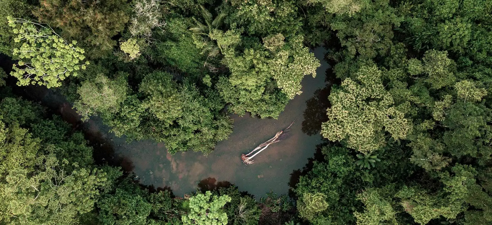

Mexico · Oaxaca
Oaxaca & the South
Autumn 2026 · 10 days
Moving through villages, markets, and surrounding landscapes, with time spent in the everyday life of the region.
What Is a Walk
We follow a route over several days — sometimes returning to the same places, sometimes moving on. Over time, something shifts in how the land is felt, and how we move through it.
Each day takes shape around the land itself — its paths, stories, people, rituals, silence, and what unfolds along the way. Some parts are planned, some are left open. The rhythm changes as the journey moves, and so does the way we pay attention.
Each journey lasts between 7 and 14 days, in small groups. We stay close to the land and spend time with the people who know it well. There is a structure, but it stays open enough for things to unfold.
Open Applications
Mexico · Oaxaca
Autumn 2026 · 10 days
Moving through villages, markets, and surrounding landscapes, with time spent in the everyday life of the region.

Peru · Andes & Amazonia
Autumn 2026 · 12 days
Moving between mountains and jungle over several days, with time spent in the Sacred Valley and along the river.
Where We Have Walked
Each place has held us in its own way.
Something of it stays, long after we leave.
Fifteen days moving through the body of the Andes. We opened in ceremony with Q'ero lineage holders in the Sacred Valley, rode on horseback across the Rainbow Mountains at 5,000m, descended into the mists of the high Amazon — waterfalls, hot springs, a visit to a coffee farm tucked into the cloud forest — and finally walked on foot into Machu Picchu at dawn. Every single day held movement, medicine, and circle. This journey left a mark that has not faded.
The Route
Cusco · Pisac
Sacred Valley base. Ceremonies, Despacho, Kirtan, Gong Bath
Ausangate
Rainbow Mountains. Horseback at 5,000m. Glacial lakes
High Amazon
Waterfall camps. Hot springs. Coffee farm. Into the cloud forest
Machu Picchu
Walk in. Dawn circle at the citadel. Panoramic train return
Cusco
San Pedro Market. San Blas. Closing in the Inca capital
Three days on a private Nile dahabiya yacht moving between temples at the pace of the current — Isis, Horus, Hatshepsut — then one day at the Pyramids, and finally three days at the edge of the Libyan desert, in an ecolodge by salt lakes, in almost complete silence. Movement practice and sound healing every morning throughout.
The Route
Aswan
Philae (Isis Temple). Nubian village. Opening circle on the Nile
Edfu · Esna
Temple of Horus. Water rituals. Sailing south to north
Luxor
Karnak at dusk. Hatshepsut Temple. Ceremony among columns
Cairo
Giza Pyramids & Sphinx. Khan El Khalili. Night bus west
Siwa Oasis
Salt lakes. Amon Oracle Temple. Desert safari at sunset
Eight days working with the five elements — Earth, Water, Fire, Air, Space — through movement, Kalari (ancient Indian martial art), Odissi dance, mud sculpture, and the spatial philosophy of Vaastu Shastra. We sat in meditation at Matrimandir, walked Pondicherry's French quarters at dawn when the streets were still quiet, ate long meals together in open-air gardens, and closed the journey at a live music concert under the trees of Auroville. India asks nothing of you except full presence. It gets what it asks for.
The Route
Auroville
Matrimandir Garden. Mud sculpture. Community dance. Solitude Farm
Kalarigram
Kali Puja & Kalari. Ancient martial arts in sacred space
Pondicherry
Sri Aurobindo Ashram. Irumbai Shiva Temple. Jazz evening
Svaram
Human-scale musical instruments. Sound journey in open garden
The journey that set the template for everything that followed. Fifteen days in the Andes — staying deep in the Sacred Valley with Q'ero shamans, ascending Ausangate sacred mountain on horseback, moving through the Inca ruins of Ollantaytambo under a cold morning sky, and arriving at Machu Picchu at first light when the mist still filled the valley below. Every day held medicine circle, movement, and sharing. Some of us cried. Some of us went quiet in a way we hadn't been before. The land held us as if it had been waiting for us to arrive.
The Route
Pisac
Sacred Valley home. Despacho, Gong, circles, plant medicine
Moray · Maras
Inca agricultural circles. Salt flats. Vortex points
Ausangate
Sacred mountain at 5,000m. Horses to glacial lakes. Hot springs
Ollantaytambo
Living Inca architecture. Local markets. Ancient stonework
Machu Picchu
Sunrise at the citadel. Closing circle at the world's navel
From the Ganges to the Himalayas. We opened with four days at ashrams in Rishikesh — morning yoga, Ayurvedic sessions, white-water rafting on the river, and the Ganga Aarti ceremony at Triveni Ghat as the sun went down and a thousand oil lamps were released onto the current. Then an overnight mountain drive to Dharamshala and two days of complete silence inside a Tibetan Buddhist nunnery — some of the most still hours many of us had known. We closed in McLeod Ganj: the Dalai Lama's temple, Tushita meditation, and a long goodbye dinner high in the cedar hills with views to the snow line. India gives everything, and asks everything in return.
The Route
Delhi
Arrival. Qutub Minar. Red Fort. Hauz Khas dinner
Rishikesh
4 days. Ashrams, Ganga Aarti, Vedic Puja, Ganges rafting
Thosamling
2 days of silence. Buddhist nunnery in the Himalayas
McLeod Ganj
Dalai Lama Temple. Tibetan Bowl. Himalayan hike. Closing circle
Where it all began. Seven days moving between the volcanic slopes of Tabanan and the rice terraces of Ubud — yoga and dance practice every morning before the heat arrived, long harvest walks through coffee and cacao estates with farmers who knew these paths by heart, water purification ceremonies led by Balinese priests at temple springs, a cacao ceremony that dissolved something in the room, and evenings of live music that went on longer than planned. Bali has a way of undoing you quietly, from the inside. It did not let us leave unchanged.
The Route
Tabanan
Batukaru Coffee Estate. Biodynamic harvest. Temple purification
Canggu
Tanah Lot Temple. La Brisa market. Surf & sunset
Ubud
Tegallalang rice terraces. Monkey Forest. Tirta Empul spring temple
Kanto Lampo
Waterfall. Cacao ceremony. Closing with live music
Tell us what's drawing you here, and we'll take it from there.